Hiroshima, Hiroshima: things to do, food and stays
Hiroshima · Hiroshima
Hiroshima
Highlighted on the Hiroshima map.

Stay
ホテルグランヴィア広島サウスゲート
Hotel Guranvia Hiroshima Sausugeto
グランドプリンスホテル広島
Grand Purinsu Hotel Hiroshima
リーガロイヤルホテル広島
Rigaroiyaru Hotel Hiroshima
ホテルグランヴィア広島
Hotel Guranvia Hiroshima
ヒルトン広島
Hiruton Hiroshima
Inn in Nakakufujimi, Hiroshima; 10-minute drive from Hiroshima Station.
ダイワロイネットホテル広島駅前
Daiwaroinetto Hotel Hiroshima Ekimae
Hotel in Higashikufutabanosato, Hiroshima with separate bath and toilet.
ランドーホテル広島プレステージ
Rando Hotel Hiroshima Puresuteji
Hotel in Minamikunishikojin, Hiroshima; 5-minute walk from Hiroshima Station.
相鉄フレッサイン広島駅前
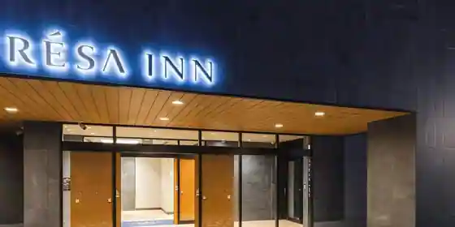
Sotetsu Furessain Hiroshima Ekimae
シェラトングランドホテル広島
Shieraton Grand Hotel Hiroshima
Hotel in Higashikuwakakusa, Hiroshima with business travelers.
ザ ノット 広島
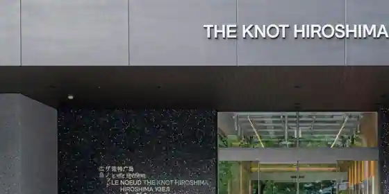
Za Notto Hiroshima
ホテル法華クラブ広島
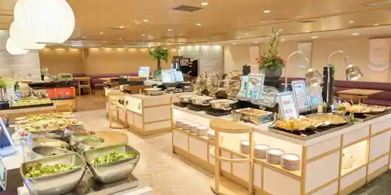
Hotel Hokke Kurabu Hiroshima
Hotel at Komyoishi Onsen in Nakakunaka, Hiroshima with breakfast available and local cuisine.
ダイワロイネットホテル広島
Daiwaroinetto Hotel Hiroshima
Hotel in Nakakukuniyasutera, Hiroshima with separate bath and toilet.
Dining
馳走 啐啄一十
Chiso Sottaku Kazuto
永山
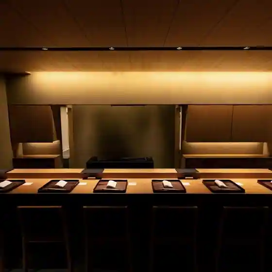
Nagayama
壮士
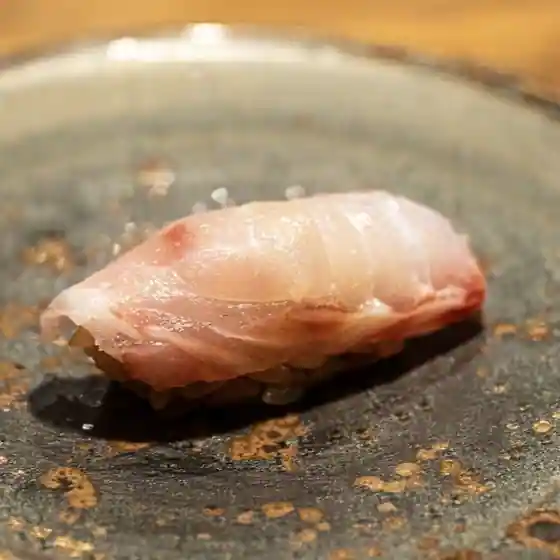
Soshi
季節料理 なかしま
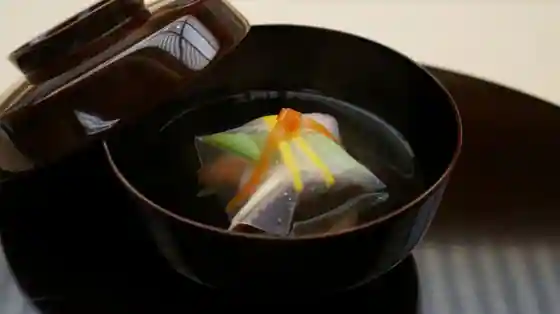
Kisetsu Ryori Nakashima
和牛lab K
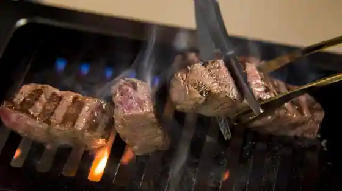
Wagyu lab K
中土
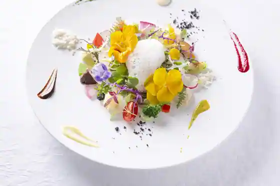
Nakatsuchi
とり やまもと
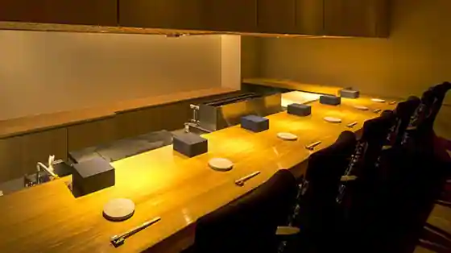
Tori Yamamoto
NICON
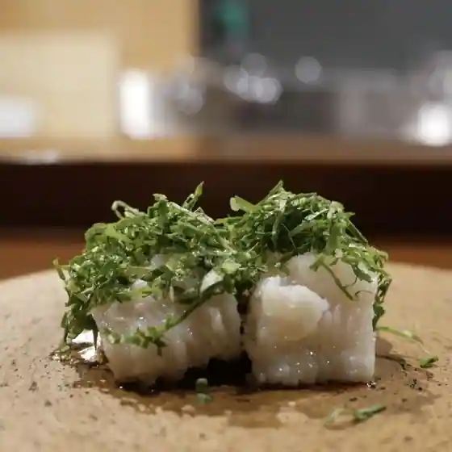
NICON
中国料理マスキ
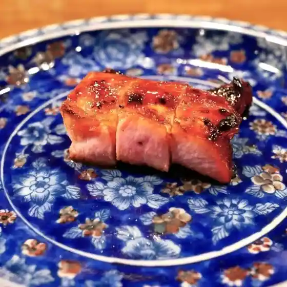
Chugokuryori Masuki
DIRETTO
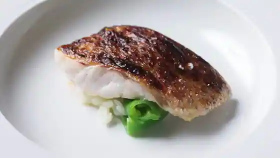
DIRETTO
鮨 松
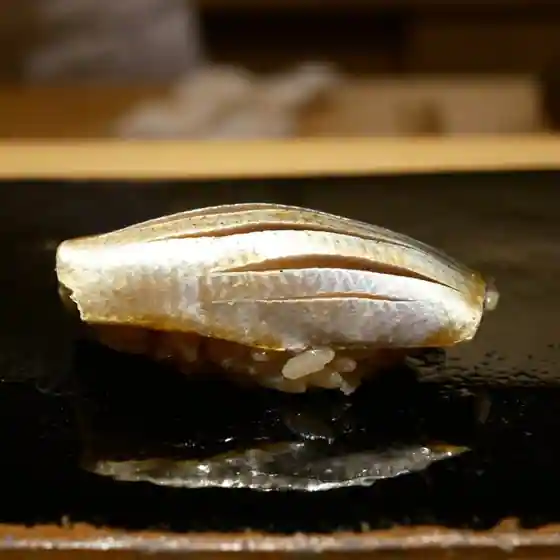
Sushi Matsu
EPURE
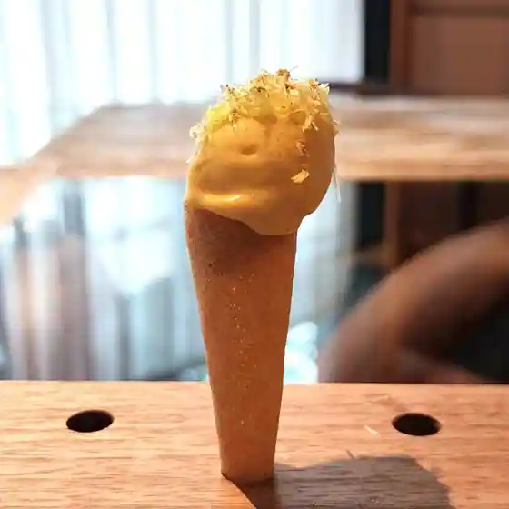
EPURE
中国菜 吉日
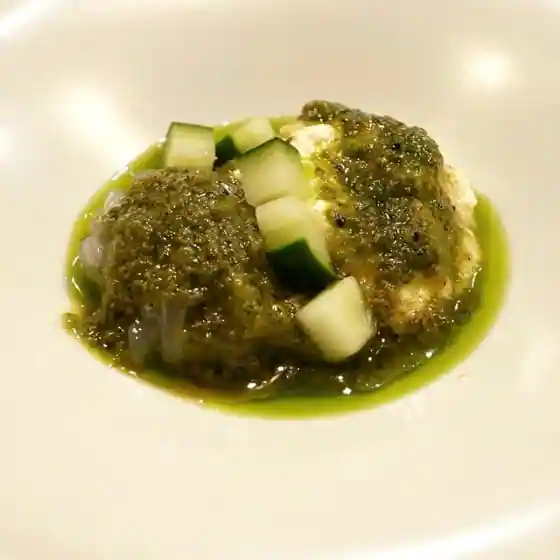
Chugoku Na Kichijitsu
hiroto
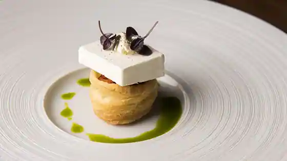
hiroto
鮨 こうしろう
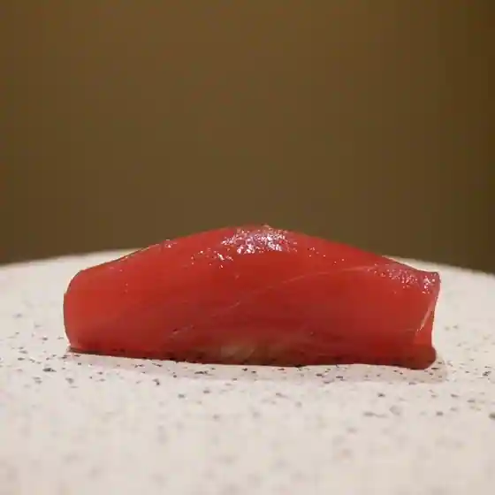
Sushi Koshiro
ビールスタンド重富
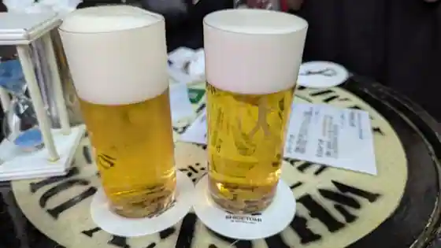
Beer Sutando Shigetomi
鮨 まつばら
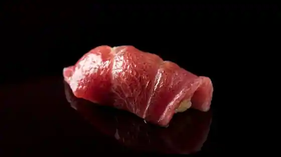
Sushi Matsubara
ピッツァ ジューシー
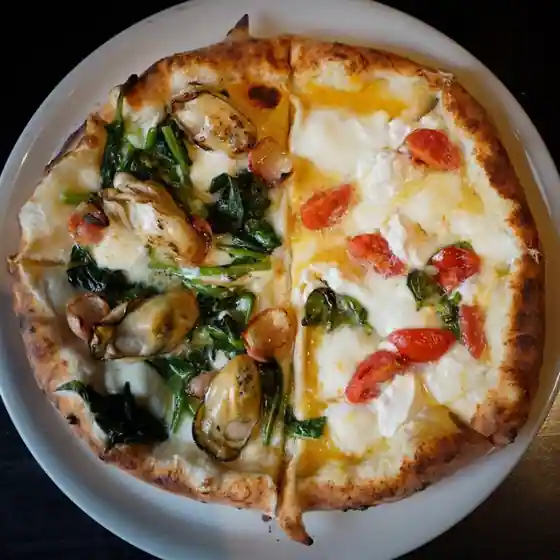
Pittsua Jushi
鷹ノ橋 清耽
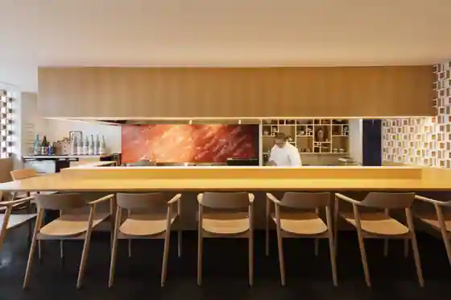
Taka No Hashi Kiyoshi Tan
深夜的中华食堂
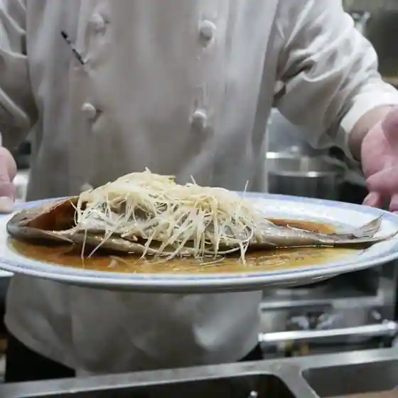
Shinya Tekichu Shokudo
お好み焼き 辰
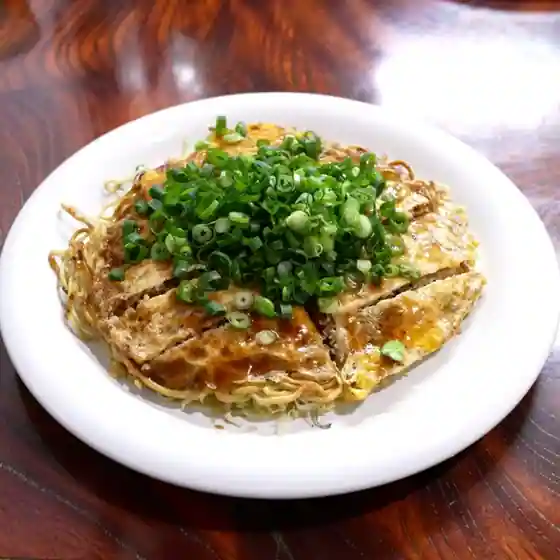
O Konomi Yaki Tatsu
初ちゃん
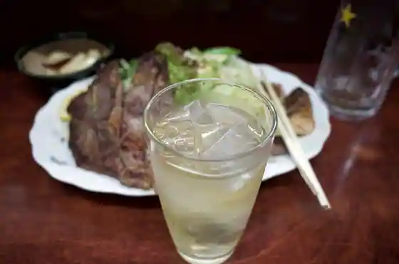
Hatsu Chan
醸 はせべ
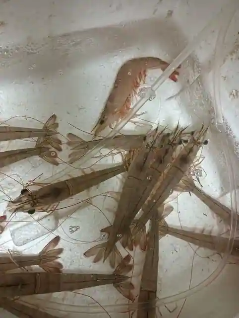
Jo Hasebe
ル ジャルダン グルマン
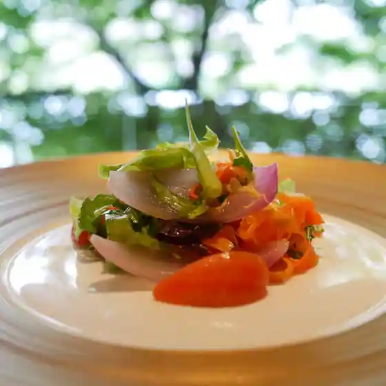
Ru Jarudan Guruman
Sights
Hiroshima Shiro
Hiroshima Castle
Gembaku Domu
Atomic Bomb Dome
Heiwa Memorial Park
Hiroshima Peace Memorial Park
Shukukeien
Shukkeien Garden
Hiroshima Prefectural Art Museum
Hiroshima Museum of Art
Mitaki Tera Taho to
Mitaki-dera Tahoto